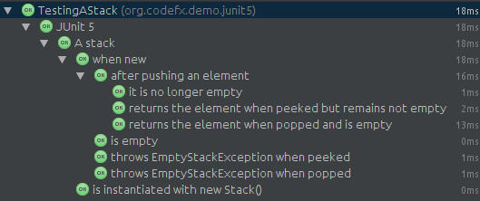
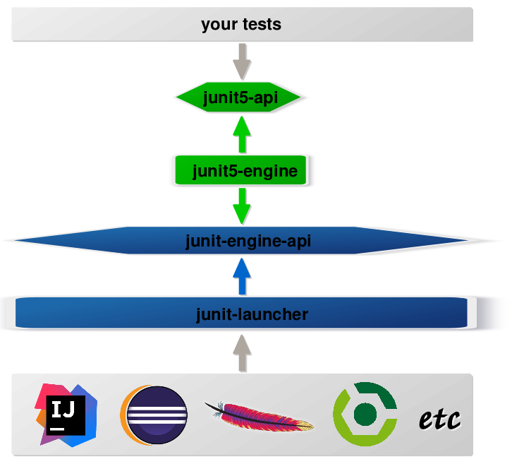

class JUnit5Test {
@Test
void someTest() {
assertTrue(true);
}
}JUnit 5
Next Generation Testing
on the JVM
Nicolai Parlog
Heads Up
JUnit 5 is work in progress!
This is based on the alpha version
(released in February 2016).
Milestone 1 should be released
any day now.
Give feedback!
JUnit 5 Links:
@junitteam on Twitter
Also:
articles on my blog
Basics
| Basics |
| Dynamic Tests |
| Extensions |
| Architecture |
| Tools & Setup |
What’s New?
⇝ Package visibility suffices!
What’s New?
@BeforeAll
static void beforeAll() { ... }
@BeforeEach
void beforeEach() { ... }
@AfterEach
void afterEach() { ... }
@AfterAll
static void afterAll() { ... }⇝ Lifecycle annotations have new names.
What’s New?
@Test
@Disabled("Y U No Pass?!")
void failingTest() {
assertTrue(false);
}⇝ @Ignored is now @Disabled.
What’s New?
@Test
@DisabledOnFriday
void failingTest() {
assertTrue(false);
}⇝ Convenient Extensibility.
But how?
What’s New?
@Test
void someTest() {
...
assertEquals(
expected,
actual,
"Should be equal.");
}⇝ Failure message comes last.
What’s New?
@Test
void someTest() {
...
assertEquals(
expected,
actual,
() -> "Should " + "be " + "equal.");
}⇝ Failure message can be created lazily.
What’s New?
@Test
void assertAllProperties() {
Address ad = new Address(
"City", "Street", "42");
assertAll("address",
() -> assertEquals("C", ad.city),
() -> assertEquals("Str", ad.street),
() -> assertEquals("63", ad.number)
);
}⇝ assertAll gathers results from multiple assertions
What’s New?
Output if assertAll fails:
org.opentest4j.MultipleFailuresError:
address (3 failures)
expected: <C> but was: <City>
expected: <Str> but was: <Street>
expected: <63> but was: (42)What’s New?
void methodUnderTest() {
throw new IllegalStateException();
}
@Test
void assertExceptions() {
assertThrows(
Exception.class,
this::methodUnderTest);
}⇝ assertThrows asserts that
an exception of a specific type was thrown
What’s New?
@Test
void assertExceptions() {
Exception ex = expectThrows(
Exception.class,
this::methodUnderTest);
assertEquals("Msg", ex.getMessage());
}⇝ expectThrows is like assertThrows
but also returns the exception for further examination
What’s New?
class CountTest {
// lifecycle and tests
@Nested
class CountGreaterZero {
// lifecycle and tests
@Nested
class CountMuchGreaterZero {
// lifecycle and tests
}
}
}⇝ @Nested to organize tests in inner classes
What’s New?
@DisplayName("A count")
class CountTest {
@Nested
@DisplayName("when greater zero")
class CountGreaterZero {
@Test
@DisplayName("is positive")
void isPositive() { ... }
}
}⇝ @DisplayName to show a nice name
What’s new?
The effects of @Nested and @DisplayName:

What’s new?
@Test
void someTest(MyServer server) {
// do something with `server`
}⇝ Test has parameters!
But where do they come from?
What’s New?
Summary
lifecycle works much like before
many details were improved
@Nestedand@DisplayName
make a nice coupleparameter injection
no lambdas (so far)
That's all very nice but how is it
Next Generation Testing?
Dynamic Tests
| Basics |
| Dynamic Tests |
| Extensions |
| Architecture |
| Tools & Setup |
Defining Tests
Up to now tests were identified
by names
(test…in JUnit 3 and before)by annotations
(@Testin JUnit 4 and 5)
⇝ Tests had to be known at compile time.
Defining Tests
So what?!
What if we want to create tests
with lambdas
for a set of parameters
based on non-source files
⇝ We need to define tests at run time.
Dynamic Tests To The Rescue!
Allow creation of tests at run time.
tests are wrapped into
DynamicTest-smethods that create them
are annotated with@TestFactory
(This is not part of the alpha version.)
Creating Tests
@TestFactory
List<DynamicTest> createPointTests() {
return Arrays.asList(
dynamicTest(
"A Great Test For Point",
() -> { /* test code */ } ),
dynamicTest(
"Another Great Test For Point",
() -> { /* test code */ } )
);
}Implementation
The rest is straight-forward:
JUnit detects
@TestFactorymethodscalls them to generate tests
adds tests to the test tree
eventually runs them
Lambda Tests
So what about lambdas?
This would be great:
class PointTest {
a_great_test_for_point -> {
/* test code */
}
}But how?
Lambda Tests
public class LambdaTest {
private List<DynamicTest> tests = /*...*/;
protected void __(
String name, Executable test) {
tests.add(dynamicTest(name, test));
}
@TestFactory List<DynamicTest> tests() {
return tests;
}
}Lambda Tests
class PointTest extends LambdaTest {{
__("A Great Test For Point", () -> {
/* test code goes here */
});
}}Lambda Tests
While we’re hacking… what about this?
class PointTest extends LambdaTest {{
__(a_great_test_for_point -> {
/* test code goes here */
});
}}Learn how to access
a lambda’s parameter name
with
this one weird trick.
Parameterized Tests
void pointTest(Point p) { /*...*/ }
@TestFactory
Stream<DynamicText> testingPoints() {
return Stream.of(
/* create points */)
.map(p ->
dynamicTest(
"Testing " + p,
() -> pointTest(p)));
}Parameterized Tests
void pointTest(Point p) { /*...*/ }
@TestFactory
Stream<DynamicText> testingPoints() {
List<Point> points = asList(
/* create points */);
return DynamicTest.stream(
points,
p -> "Testing " + p,
p -> pointTest(p));
}File-Based Tests
void pointTest(Point p) { /*...*/ }
@TestFactory
Stream<DynamicText> testingPoints() {
return Files
.lines(pathToPointFile)
.map(Point::parse)
.map(p -> dynamicTest(
"Testing " + p,
() -> pointTest(p)));
}Dynamic Tests
Summary
with
@TestFactoryandDynamicTest
we can create tests at run timeallows new ways to write tests:
as lambdas (yay!)
for sets of parameters
based on external input
That's all very nice but is this already
Next Generation Testing?
Extensions
| Basics |
| Dynamic Tests |
| Extensions |
| Architecture |
| Tools & Setup |
Extensions in JUnit 4
Runners
Manage a test’s full lifecycle.
@RunWith(MockitoJUnitRunner.class)
public class MyTest { ... }very flexible
heavyweight
exclusive
Extensions in JUnit 4
Rules
Execute code before and after statements.
public class MyTest {
@Rule
public MockitoRule rule =
MockitoJUnit.rule();
}added in 4.7
lightweight
limited to before/after behavior
Extensions in JUnit 4
Extension model is not optimal:
two competing mechanisms
each with limitations
but with considerable overlap
composition can cause problems
Approach in JUnit 5
From JUnit 5’s Core Principles:
Prefer extension points over features
Quite literally,
JUnit 5 has Extension Points
Extension Points
BeforeAll Callback
Test Instance Post Processing
Conditional Test Execution
BeforeEach Callback
Parameter Resolution
Exception Handling
AfterEach Callback
AfterAll Callback
Implementing Extensions
one interface for each extension point
method arguments capture context
public interface BeforeEachExtensionPoint
extends ExtensionPoint {
void beforeEach(
TestExtensionContext context)
throws Exception;
}an extension can use multiple points
to implement its feature
Benchmark Extension
We want to benchmark our tests!
for each test method
write the elapsed time to console
How?
store test launch time before each test
compute elapsed time and print after each test
Benchmark Extension
public class BenchmarkExtension implements
BeforeEachExtensionPoint,
AfterEachExtensionPoint {
private long launchTime;
// ...
}Benchmark Extension
@Override
public void beforeEach(
TestExtensionContext context) {
launchTime = currentTimeMillis();
}
@Override
public void afterEach(
TestExtensionContext context) {
printf("Test '%s' took %d ms.%n",
context.getDisplayName(),
currentTimeMillis() - launchTime);
}Other Examples
Remember This?
@Test
@DisabledOnFriday
void failingTest() {
assertTrue(false);
}Let’s see how it works!
Disabled Extension
public class DisabledOnFridayCondition
implements TestExecutionCondition {
@Override
public ConditionEvaluationResult evaluate(
TestExtensionContext context) {
if (isFriday())
return disabled("Happy Weekend!");
else
return enabled("Fix it!");
}
}Other Examples
What about parameter injection?
@Test
void someTest(MyServer server) {
// do something with `server`
}Parameter Injection
public class MyServerParameterResolver
implements MethodParameterResolver {
@Override
public boolean supports(
Parameter parameter, ... ) {
return parameter.getType()
== MyServer.class;
}
@Override
public Object resolve( ... ) {
return new MyServer();
}
}Applying Extensions
How do we apply extensions?
@ExtendWith(DisabledOnFridayCondition.class)
class JUnit5Test {
...
}That’s technical and verbose… :(
Applying Extensions
Meta-annotations to the rescue!
JUnit 5’s annotations are meta-annotations
JUnit 5 checks recursively for annotations
⇝ We can create our own annotations!
Creating Annotations
@ExtendWith(DisabledOnFridayCondition.class)
public @interface DisabledOnFriday { }
@Test
@Tag("integration")
@ExtendWith(BenchmarkExtension.class)
@ExtendWith(MyServerParameterResolver.class)
public @interface IntegrationTest { }
@IntegrationTest
@DisabledOnFriday
void testLogin(MyServer server) { ... }Extensions
Summary
flexibility because of many extension points
extensions compose well
customizable due to meta-annotations
(We left out some details.)
That's all very nice but how is it
Next Generation Testing?
Architecture
| Basics |
| Dynamic Tests |
| Extensions |
| Architecture |
| Tools & Setup |
JUnit 4 Architecture
a single JAR (ignoring Hamcrest)
used by
developers
extensions
IDEs, build-tools
no separation of concerns
JUnit 4 Architecture
tools provide us with awesome features!
but API is not powerful enough
I know, I’ll use reflection!
nothing was safe!
bound tools to implementation details
made maintenance and evolution very hard
Dead End
Part of JUnit’s success is its great tool support!
But the same tools locked development in.
The success of JUnit as a platform prevents the development of JUnit as a tool.
(Johannes Link)
Approach in JUnit 5
Separation of concerns:
an API to write tests against
a mechanism to discover and run tests
Approach in JUnit 5
Separation of concerns V 2.0:
an API to write tests against
a mechanism to discover and run tests
specific mechanism per variant of tests
(e.g. JUnit 4 or JUnit 5)orchestration of specific mechanisms
API between them
JUnit 5 Modules

JUnit 5 Modules
junit5-apithe API for us to write tests against
junit-enginge-apithe API all test engines have to implement
junit5-engineimplementation for JUnit 5 tests
junit-launcherdiscovers test engines
orchestrates their execution
provides an API to IDEs and build tools
Architecture
Summary
clear separation of concerns
API for developers
API for tools
That's all very nice but how is it
Next Generation Testing?
Because it opens up the platform!
Moar Engines!
want to run JUnit 4 tests?
⇝ create an engine for itwant TestNG to have support like JUnit?
⇝ create an engine for itwant to write tests in natural language?
⇝ create an engine for it
Moar Engines!

Open Platform
Once JUnit 5 adoption sets in:
tools are decoupled from implementation details
tools can support all frameworks (almost) equally well
new frameworks start with full tool support
developers can try out new things
A new generation of test frameworks might arise!
Open Platform
JUnit’s success as a platform
becomes available to everybody.
This heralds the
next generation of testing on the JVM!
Architecture
Summary
clear separation of concerns:
APIs for developers, tools,
and new frameworksopens up the platform
tool support for everybody!
(There’s even more to the story.)
Tools & Setup
| Basics |
| Dynamic Tests |
| Extensions |
| Architecture |
| Tools & Setup |
Writing Tests
As Easy As Pie!
Add this:
org.junit / junit5-api / 5.0.0-ALPHA
Have fun!
Running Tests
No native support, yet
Running Tests
As Part Of JUnit 4
individual classes:
@RunWith(JUnit5.class) public class JUnit5Test { ... }all classes:
@RunWith(JUnit5.class) @Packages({ "my.test.package" }) public class JUnit5TestSuite { }
Running Tests
With Build Tools
JUnit 5 team provides rudimentary
Gradle plugin and Maven Surefire provider
(see user guide for details)
Running Tests
From Console
There is a console runner:
# run all tests
junit-console
-p ${path_to_compiled_test_classes}
-a
# run a specific test
junit-console
-p ${path_to_compiled_test_classes}
org.codefx.demo.junit5.HelloWorldTestTools & Setup
Summary
you can start writing tests right away
tools have no native support yet
running with JUnit 4 is a good compromise
(Read about the setup details.)
Next Generation Testing On The JVM
new API is an incremental improvement
full of thoughtful detailsdynamic tests are very useful
extension model looks very promising
architecture opens up the platform
tool support is not there yet
(Read more about JUnit 5.)
Questions?
Find Me
Me
you can hire me
since 2016: Java channel editor at SitePoint
2014-2016: Java developer at Disy
2011-2014: Java developer at Fraunhofer ISI
until 2010: CS and Math at TU Dortmund
Image Credits
bubbles: Keith Williamson (CC-BY 2.0)
architecture diagrams:
Nicolai Parlog (CC-BY-NC 4.0)question-mark: Milos Milosevic (CC-BY 2.0)